Same question. Different answer.
We ask AI the questions real customers ask, the same way they ask them, and screenshot every answer. Then we ask again. This page is the receipt: dated, unedited and repeatable.
Three asks. Three different top fives.
Test 01: “best rhinoplasty surgeon in Los Angeles”
Run 1
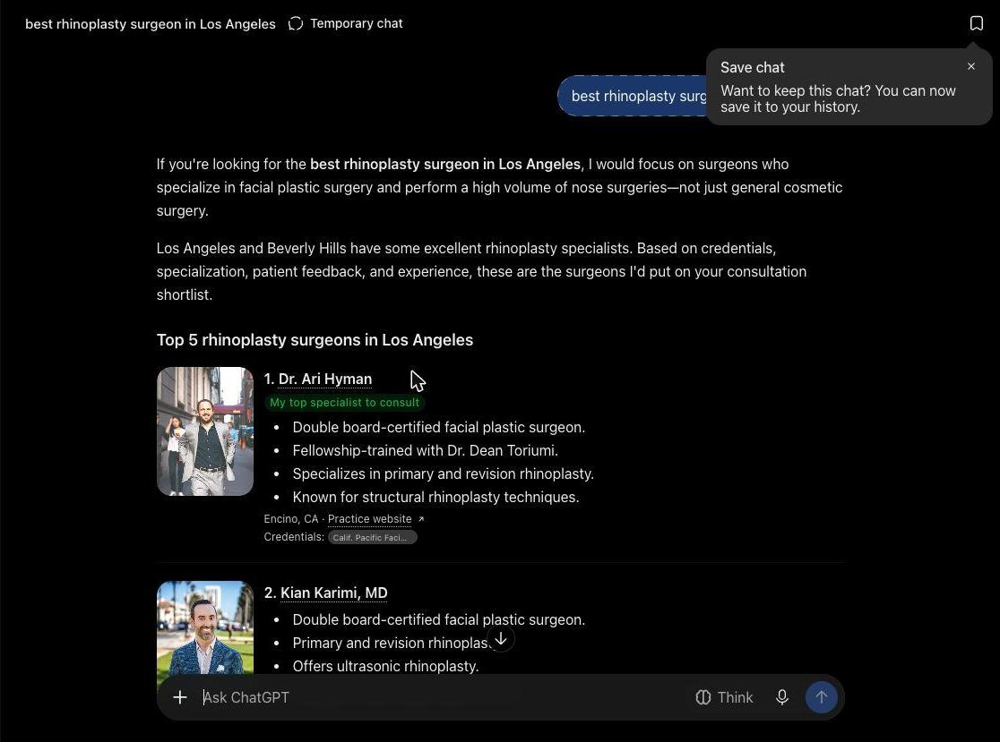
- Dr. Ari Hyman
- Kian Karimi, MD
- Jason S. Hamilton, MD
- Behrad Brad Aynehchi, MD
- Dr. Jacob Sedgh
Run 2
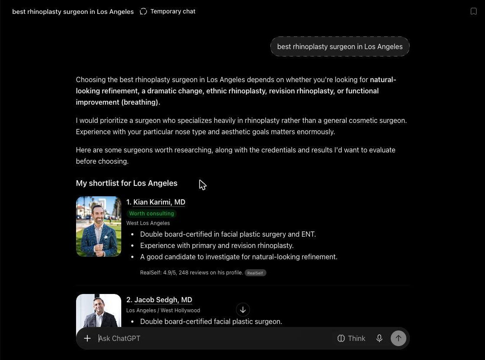
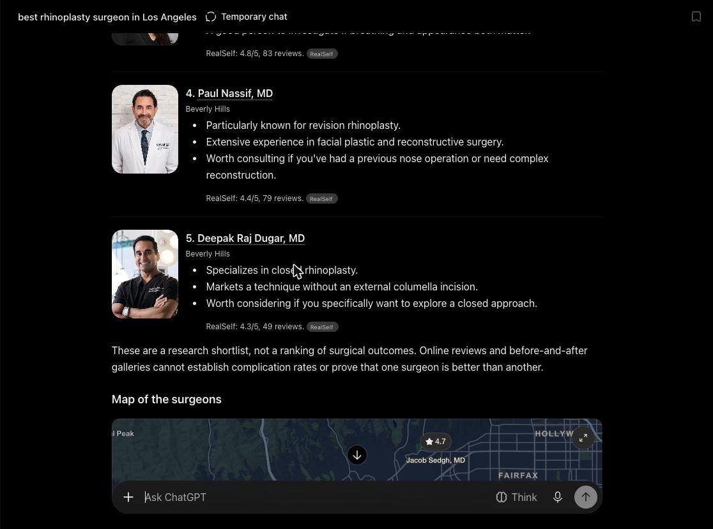
- Kian Karimi, MD
- Jacob Sedgh, MD
- Amy K. Hsu, MD, FACS
- Paul Nassif, MD
- Deepak Raj Dugar, MD
Run 3
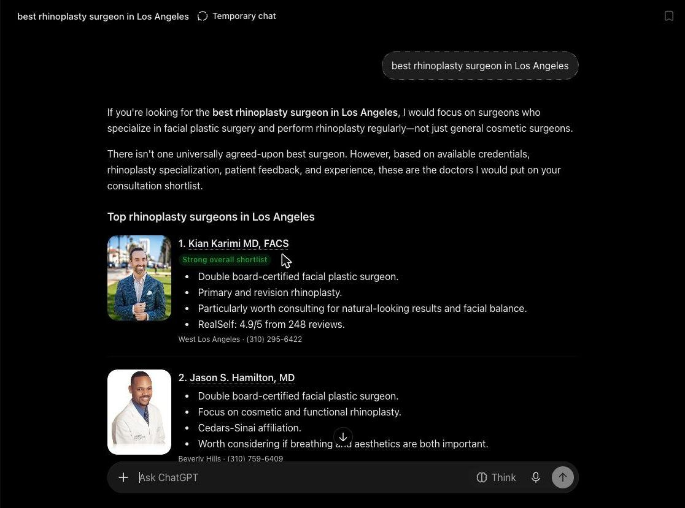
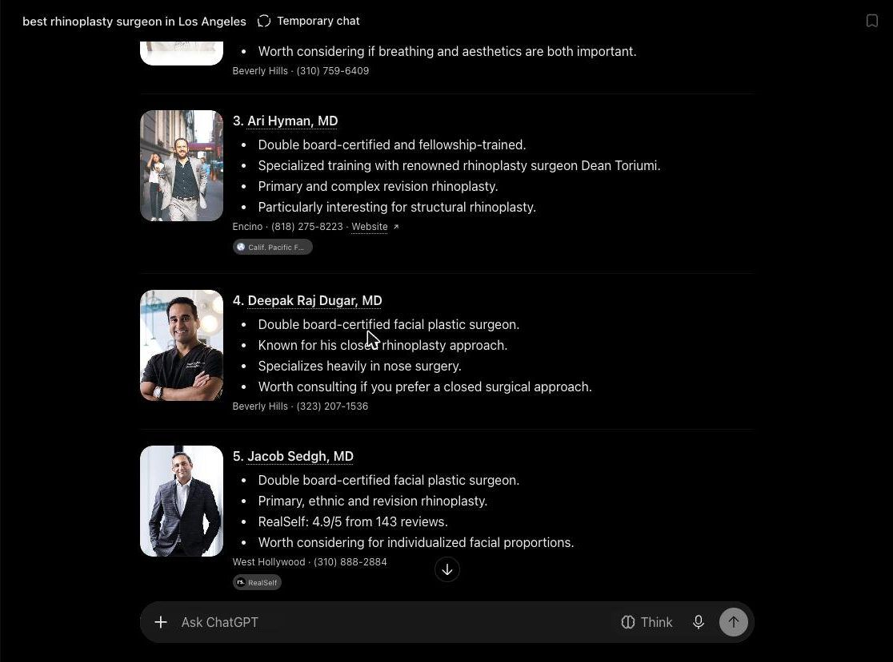
- Kian Karimi MD, FACS
- Jason S. Hamilton, MD
- Ari Hyman, MD
- Deepak Raj Dugar, MD
- Jacob Sedgh, MD
Test 01: who was named, and how often
| Surgeon | Named | Position |
|---|---|---|
| Kian Karimi | 3 of 3 | #1 in 2 runs, #2 in 1 |
| Jacob Sedgh | 3 of 3 | #2, #5, #5 |
| Jason Hamilton | 2 of 3 | #3, #2 |
| Ari Hyman | 2 of 3 | #1, #3 |
| Deepak Dugar | 2 of 3 | #5, #4 |
| Behrad Aynehchi | 1 of 3 | #4 |
| Amy Hsu | 1 of 3 | #3 |
| Paul Nassif | 1 of 3 | #4 |
What we noticed
- No two answers matched. Eight different surgeons appeared across three runs of the same question. Only two were named every time.
- Position moves. The same surgeon was #1 in one run and #3 in the next. A single screenshot is a snapshot, not a ranking.
- RealSelf shows up everywhere. Most entries quoted a RealSelf rating and review count, often as the only source shown.
- ChatGPT interviews the patient. After the list, it asked about the result they want, first surgery or revision, and in one run their budget.
That's why we measure how often AI names a business across repeated asks, not where it lands once. It's the same way every client's AI Score is measured.
“best rhinoplasty surgeon in Miami”: who ChatGPT named, ask by ask
Three asks of the same question. Each column is a business, each row an ask. Taller means named higher. 5 different names came back. Source: AI Answer Watch, Local AI Registry, Nov 13, 2026.
See the data
| Business | Ask 1 | Ask 2 | Ask 3 |
|---|---|---|---|
| Anthony Bared | #1 | #1 | #1 |
| Andres Bustillo | #2 | #2 | #3 |
| Carlos Wolf | #3 | #4 | #2 |
| Kim Patrick Murray | #4 | #3 | #4 |
| Marcelo Ghersi | #5 | not named | not named |
Test 02: the same question, six times, in 10 cities
We asked ChatGPT “best rhinoplasty surgeon in [city]” three times per city, then did it all again a little later with full-answer screenshots. That's six asks per city on one afternoon, Nov 13, 2026. Below is who ChatGPT put first each time.
| City | Ask 1 | Ask 2 | Ask 3 | Ask 4 | Ask 5 | Ask 6 |
|---|---|---|---|---|---|---|
| Atlanta | Thomas Walker | Thomas Walker | Thomas Walker | Thomas Walker | Thomas Walker | Thomas Walker |
| Chicago | Dean Toriumi | Dean Toriumi | Dean Toriumi | Anil Shah | Dean Toriumi | Sammy Sinno |
| Dallas | Rod Rohrich | Rod Rohrich | Rod Rohrich | Rod Rohrich | Rod Rohrich | Rod Rohrich |
| Houston | Etai Funk | Etai Funk | Etai Funk | Tang Ho | Etai Funk | Etai Funk |
| Los Angeles | Ari Hyman | Kian Karimi | Kian Karimi | Kian Karimi | Kian Karimi | Nima Shemirani |
| Miami | Anthony Bared | Anthony Bared | Anthony Bared | Andres Bustillo | Anthony Bared | Anthony Bared |
| New York | Steven Pearlman | David Phillips | Mingyang Gray | David Phillips | Richard Westreich | David Phillips |
| Phoenix | Matthew Tamplen | Matthew Tamplen | Christian Paquet | Christian Paquet | Christian Paquet | Christian Paquet |
| San Diego | Sirius Yoo | Sirius Yoo | John Hilinski | Sirius Yoo | Sirius Yoo | John Hilinski |
| Scottsdale | Matthew Tamplen | Matthew Tamplen | Matthew Tamplen | Matthew Tamplen | Matthew Tamplen | Todd Hobgood |
Green rows kept the same #1 every time. Everywhere else, who gets recommended first depended on when the question was asked.
Every full answer, screenshotted
Each image runs from the question to the last name ChatGPT listed. Scroll inside it, or open it full size.
“best rhinoplasty surgeon in Atlanta”
Same #1 in all three runs: Thomas Walker · 7 different names in 3 runs
- Thomas J. Walker, MD
- Brian Maloney, MD
- Mark Beaty, MD
- Anita B. Sethna, MD
- Paul Pedram Daraei, MD
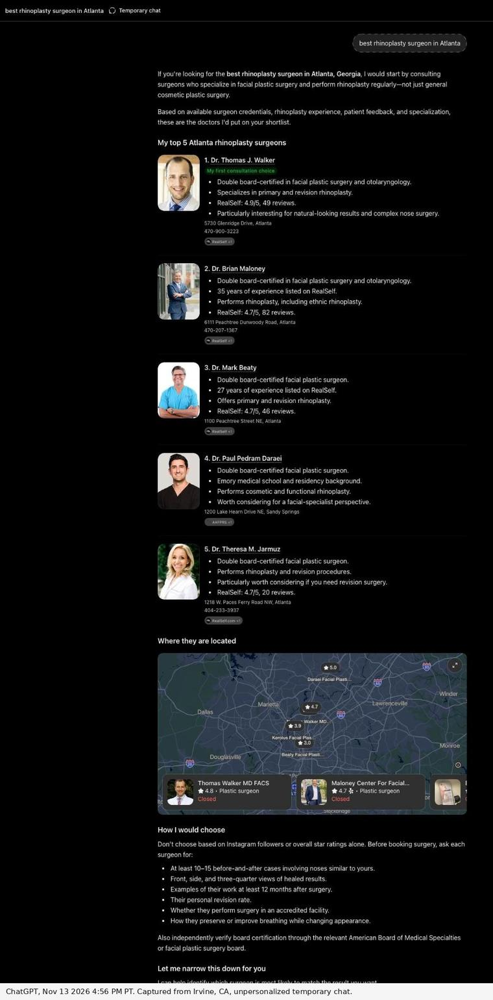
Open full size- Thomas J. Walker, MD
- Brian Maloney, MD
- Mark Beaty, MD
- Paul Pedram Daraei, MD
- Theresa M. Jarmuz, MD
- Thomas J. Walker, MD
- Mike Majmundar, MD
- Brian Maloney, MD
- Mark Beaty, MD
- Paul P. Daraei, MD
Who was named, and how often
| Name, as ChatGPT wrote it | Named | Position each time |
|---|---|---|
| Brian Maloney | 3 of 3 | #2, #2, #3 |
| Mark Beaty | 3 of 3 | #3, #3, #4 |
| Paul Daraei | 3 of 3 | #5, #4, #5 |
| Thomas Walker | 3 of 3 | #1, #1, #1 |
| Anita Sethna | 1 of 3 | #4 |
| Mike Majmundar | 1 of 3 | #2 |
| Theresa Jarmuz | 1 of 3 | #5 |
Earlier the same afternoon: 3 more runs (top of each answer)
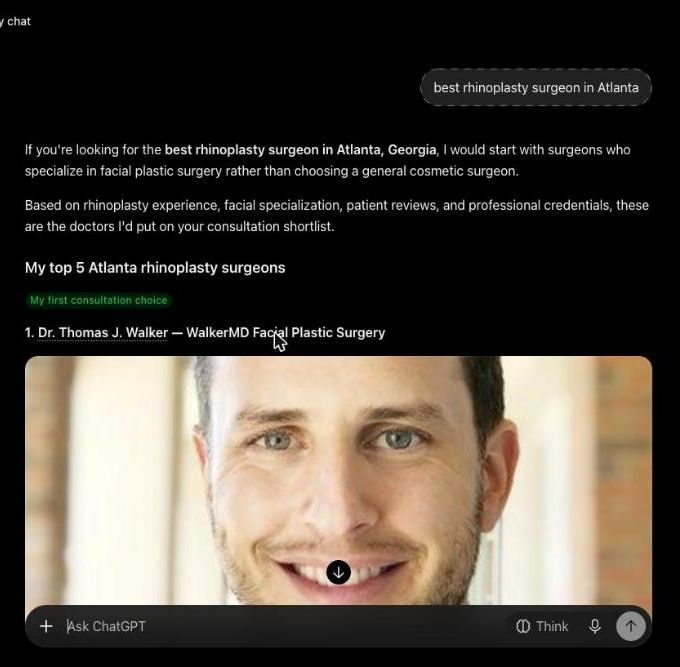
- Thomas J. Walker, MD
- Brian Maloney, MD
- Peter Abramson, MD
- Mark Beaty, MD
- Anita Sethna, MD
- Thomas J. Walker, MD
- Anita B. Sethna, MD
- Mark Beaty, MD
- Brian Maloney, MD, FACS
- Mike Majmundar, MD
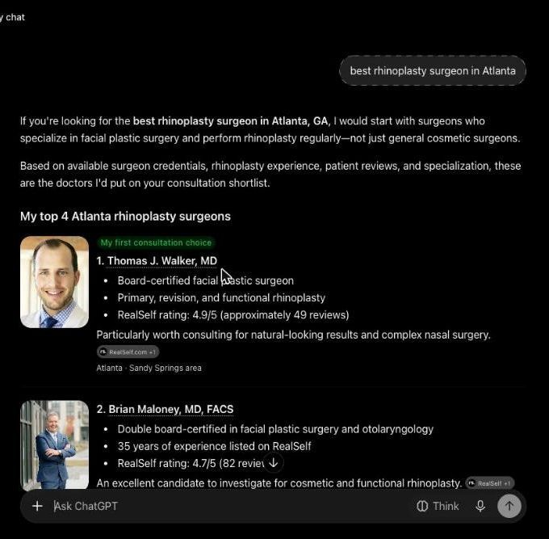
- Thomas J. Walker, MD
- Brian Maloney, MD, FACS
- Anita B. Sethna, MD
- Peter Jay Abramson, MD
“best rhinoplasty surgeon in Chicago”
The #1 changed between runs · 5 different names in 3 runs
- Anil R. Shah, MD
- Dean M. Toriumi, MD
- Douglas M. Sidle, MD
- Sammy Sinno, MD
- Thomas A. Mustoe, MD
- Dean Toriumi, MD
- Anil Shah, MD
- Sammy Sinno, MD
- Sammy Sinno, MD
- Anil R. Shah, MD
- Douglas M. Sidle, MD
- Dean Toriumi, MD
Who was named, and how often
| Name, as ChatGPT wrote it | Named | Position each time |
|---|---|---|
| Anil Shah | 3 of 3 | #1, #2, #2 |
| Dean Toriumi | 3 of 3 | #2, #1, #4 |
| Sammy Sinno | 3 of 3 | #4, #3, #1 |
| Douglas Sidle | 2 of 3 | #3, #3 |
| Thomas Mustoe | 1 of 3 | #5 |
Earlier the same afternoon: 3 more runs (top of each answer)
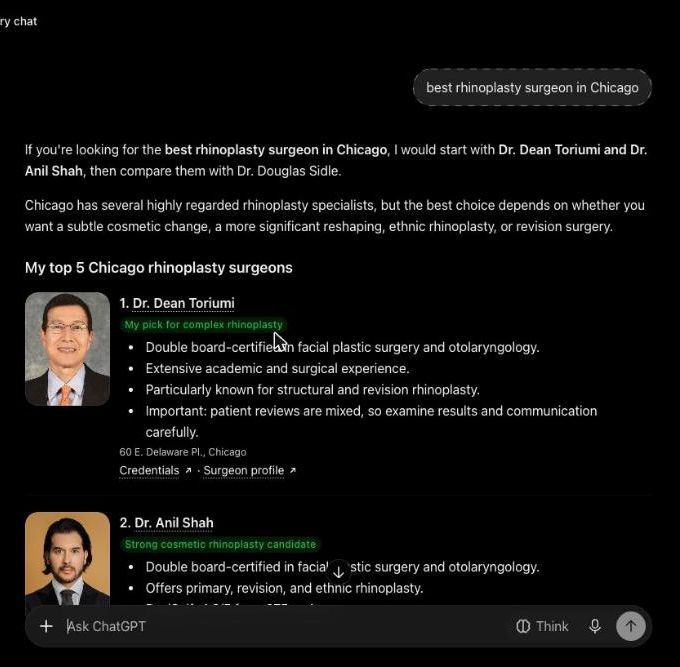
- Dean Toriumi, MD
- Anil Shah, MD
- Douglas Sidle, MD
- Thomas Mustoe, MD
- Steven Dayan, MD
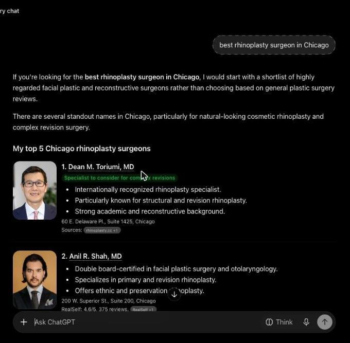
- Dean M. Toriumi, MD
- Anil R. Shah, MD
- Douglas M. Sidle, MD
- Sammy Sinno, MD
- Thomas A. Mustoe, MD
- Dean Toriumi, MD
- Anil Shah, MD
- Douglas Sidle, MD
- Thomas Mustoe, MD
- Sammy Sinno, MD
“best rhinoplasty surgeon in Dallas”
Same #1 in all three runs: Rod Rohrich · 6 different names in 3 runs
- Rod J. Rohrich, MD
- C. Spencer Cochran, MD
- Christopher Derderian, MD
- Elizabeth Longino, MD
- Benjamin Bassichis, MD
- Rod J. Rohrich, MD
- C. Spencer Cochran, MD
- Benjamin Bassichis, MD
- Rod J. Rohrich, MD
- C. Spencer Cochran, MD
- Christopher Derderian, MD
- George A. Toledo, MD
Who was named, and how often
| Name, as ChatGPT wrote it | Named | Position each time |
|---|---|---|
| C. Spencer Cochran | 3 of 3 | #2, #2, #2 |
| Rod Rohrich | 3 of 3 | #1, #1, #1 |
| Benjamin Bassichis | 2 of 3 | #5, #3 |
| Christopher Derderian | 2 of 3 | #3, #3 |
| Elizabeth Longino | 1 of 3 | #4 |
| George Toledo | 1 of 3 | #4 |
Earlier the same afternoon: 3 more runs (top of each answer)
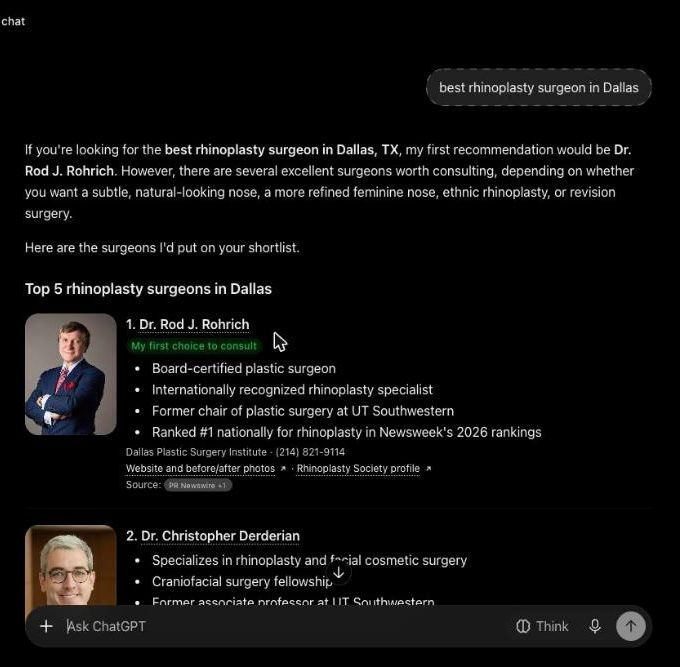
- Rod J. Rohrich, MD
- Christopher Derderian, MD
- C. Spencer Cochran, MD
- Elizabeth Longino, MD
- Benjamin Bassichis, MD
- Rod J. Rohrich, MD
- Yash Avashia, MD
- C. Spencer Cochran, MD
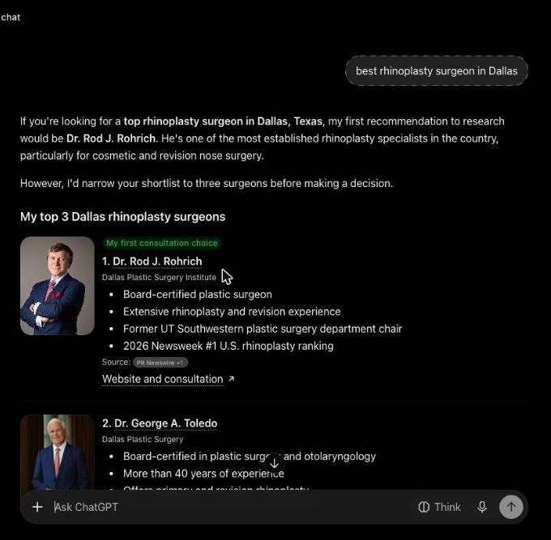
- Rod J. Rohrich, MD
- George A. Toledo, MD
- Christopher Derderian, MD
“best rhinoplasty surgeon in Houston”
The #1 changed between runs · 7 different names in 3 runs
- Tang Ho, MD
- Etai Funk, MD
- Anthony Brissett, MD
- Sunthosh Sivam, MD
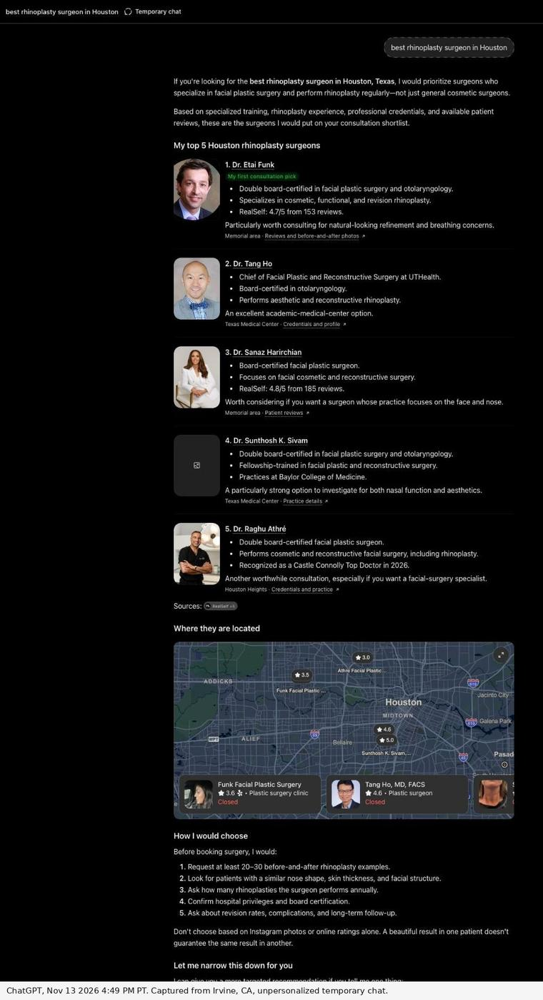
Open full size- Etai Funk, MD
- Tang Ho, MD
- Sanaz Harirchian, MD
- Sunthosh K. Sivam, MD
- Raghu Athre, MD
- Etai Funk, MD
- Tang Ho, MD
- Anthony Brissett, MD
- W. Katherine Kao, MD
- Sanaz Harirchian, MD
Who was named, and how often
| Name, as ChatGPT wrote it | Named | Position each time |
|---|---|---|
| Etai Funk | 3 of 3 | #2, #1, #1 |
| Tang Ho | 3 of 3 | #1, #2, #2 |
| Anthony Brissett | 2 of 3 | #3, #3 |
| Sanaz Harirchian | 2 of 3 | #3, #5 |
| Sunthosh Sivam | 2 of 3 | #4, #4 |
| Raghu Athre | 1 of 3 | #5 |
| W. Katherine Kao | 1 of 3 | #4 |
Earlier the same afternoon: 3 more runs (top of each answer)
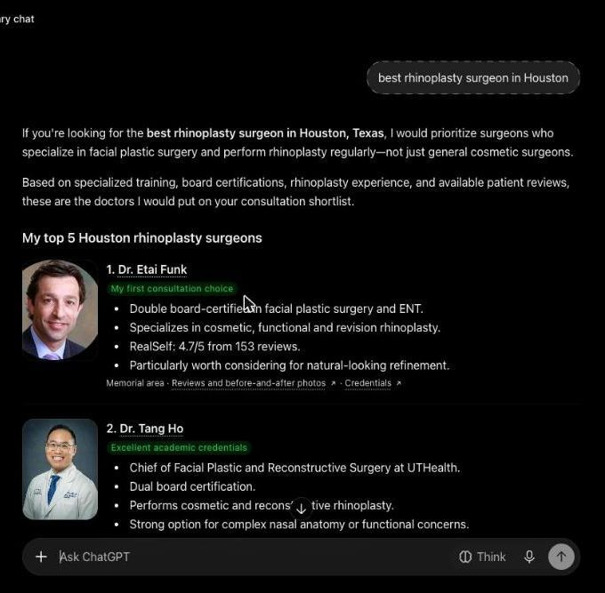
- Etai Funk, MD
- Tang Ho, MD
- Raghu Athre, MD
- Sanaz Harirchian, MD
- Sunthosh K. Sivam, MD
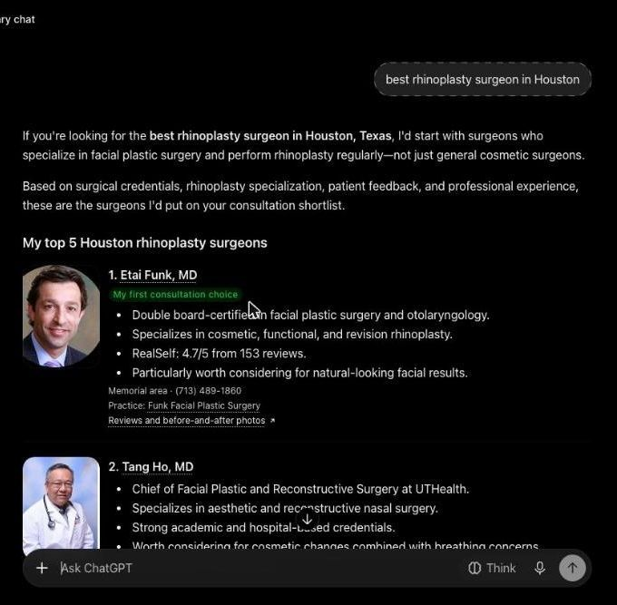
- Etai Funk, MD
- Tang Ho, MD
- Sanaz Harirchian, MD
- Anthony Brissett, MD
- Sunthosh K. Sivam, MD
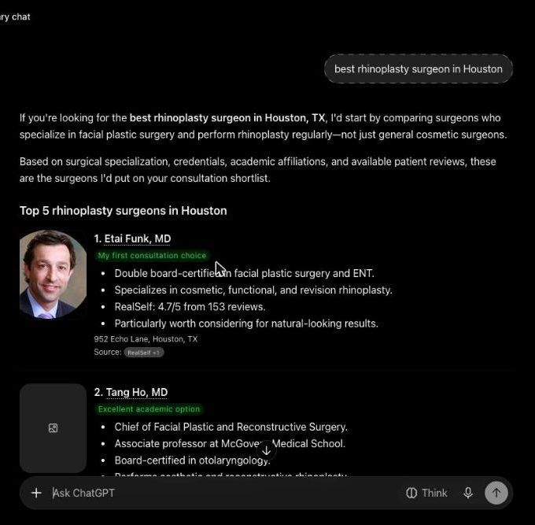
- Etai Funk, MD
- Tang Ho, MD
- Sanaz Harirchian, MD
- Anthony Brissett, MD
- Sunthosh K. Sivam, MD
“best rhinoplasty surgeon in Los Angeles”
The #1 changed between runs · 9 different names in 3 runs · Includes a Local AI Registry client
- Kian Karimi, MD, FACS
- Jason S. Hamilton, MD
- Deepak Raj Dugar, MD
- Paul Nassif, MD
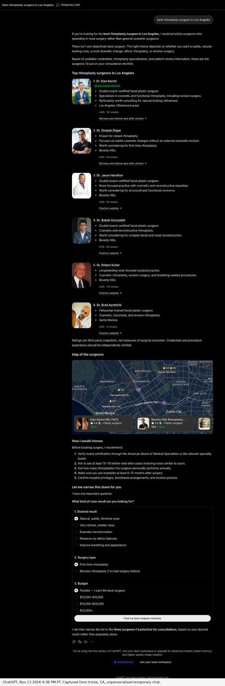
Open full size- Kian Karimi, MD
- Deepak Dugar, MD
- Jason Hamilton, MD
- Babak Azizzadeh, MD
- Robert Kotler, MD
- Brad Aynehchi, MD
- Nima Shemirani, MD
- Kian Karimi, MD, FACS
- Jason S. Hamilton, MD
- Paul Nassif, MD
- Jacob Sedgh, MD
- Deepak Raj Dugar, MD
Who was named, and how often
| Name, as ChatGPT wrote it | Named | Position each time |
|---|---|---|
| Deepak Dugar | 3 of 3 | #3, #2, #6 |
| Jason Hamilton | 3 of 3 | #2, #3, #3 |
| Kian Karimi | 3 of 3 | #1, #1, #2 |
| Paul Nassif | 2 of 3 | #4, #4 |
| Babak Azizzadeh | 1 of 3 | #4 |
| Brad Aynehchi | 1 of 3 | #6 |
| Jacob Sedgh | 1 of 3 | #5 |
| Nima Shemirani | 1 of 3 | #1 |
| Robert Kotler | 1 of 3 | #5 |
Three earlier Los Angeles runs are in Test 01.
“best rhinoplasty surgeon in Miami”
The #1 changed between runs · 6 different names in 3 runs
- Andres Bustillo, MD
- Anthony Bared, MD
- Kim Patrick Murray, MD
- Carlos L. Wolf, MD
- Marcelo Ghersi, MD
- Anthony Bared, MD
- Carlos Wolf, MD
- Kim Patrick Murray, MD
- Paul Afrooz, MD
- Marcelo Ghersi, MD
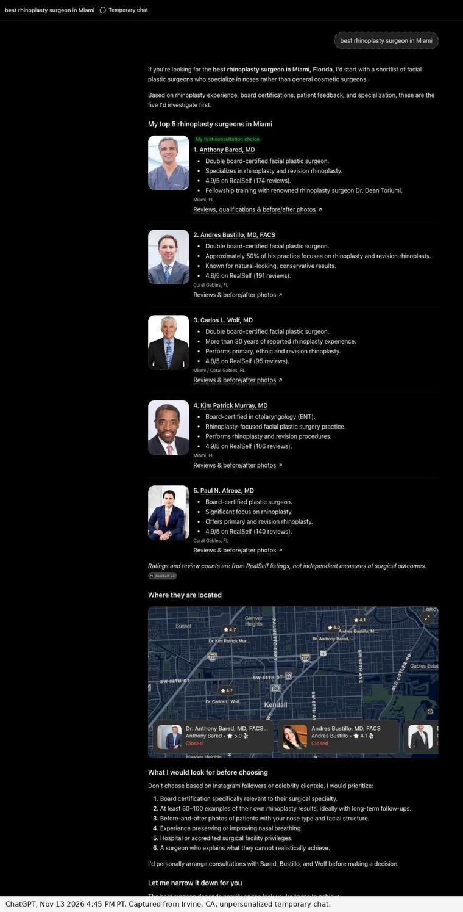
Open full size- Anthony Bared, MD
- Andres Bustillo, MD, FACS
- Carlos L. Wolf, MD
- Kim Patrick Murray, MD
- Paul N. Afrooz, MD
Who was named, and how often
| Name, as ChatGPT wrote it | Named | Position each time |
|---|---|---|
| Anthony Bared | 3 of 3 | #2, #1, #1 |
| Carlos Wolf | 3 of 3 | #4, #2, #3 |
| Kim Patrick Murray | 3 of 3 | #3, #3, #4 |
| Andres Bustillo | 2 of 3 | #1, #2 |
| Marcelo Ghersi | 2 of 3 | #5, #5 |
| Paul Afrooz | 2 of 3 | #4, #5 |
Earlier the same afternoon: 3 more runs (top of each answer)
- Anthony Bared, MD
- Andres Bustillo, MD
- Carlos Wolf, MD
- Kim Patrick Murray, MD
- Anthony Bared, MD
- Andres Bustillo, MD
- Kim Patrick Murray, MD
- Carlos L. Wolf, MD
- Marcelo Ghersi, MD
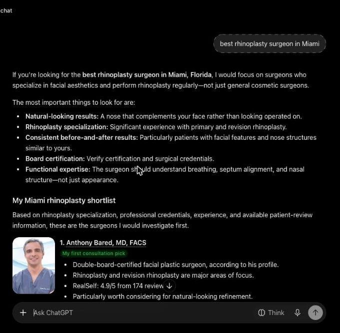
- Anthony Bared, MD, FACS
- Carlos L. Wolf, MD
- Andres Bustillo, MD, FACS
- Kim Patrick Murray, MD
“best rhinoplasty surgeon in New York”
The #1 changed between runs · 8 different names in 3 runs
- David J. Phillips, MD
- Richard G. Reish, MD, FACS
- Edward S. Kwak, MD
- Marissa Lafer, MD
- Richard W. Westreich, MD
- Edward S. Kwak, MD
- Steven J. Pearlman, MD
- Philip J. Miller, MD
- Thomas Romo III, MD
- David J. Phillips, MD
- Richard G. Reish, MD
- Thomas Romo III, MD
- Edward S. Kwak, MD
Who was named, and how often
| Name, as ChatGPT wrote it | Named | Position each time |
|---|---|---|
| Edward Kwak | 3 of 3 | #3, #2, #4 |
| David Phillips | 2 of 3 | #1, #1 |
| Richard Reish | 2 of 3 | #2, #2 |
| Thomas Romo III | 2 of 3 | #5, #3 |
| Marissa Lafer | 1 of 3 | #4 |
| Philip Miller | 1 of 3 | #4 |
| Richard Westreich | 1 of 3 | #1 |
| Steven Pearlman | 1 of 3 | #3 |
Earlier the same afternoon: 3 more runs (top of each answer)
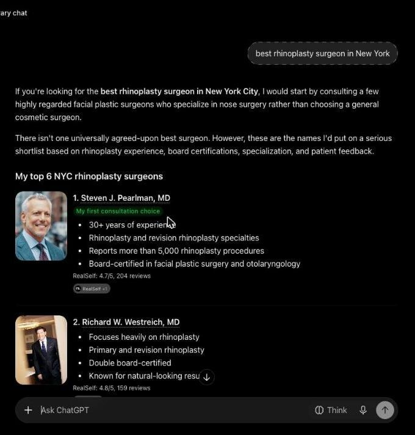
- Steven J. Pearlman, MD
- Richard W. Westreich, MD
- Edward S. Kwak, MD
- Thomas Romo III, MD
- Philip J. Miller, MD
- Sam Rizk, MD
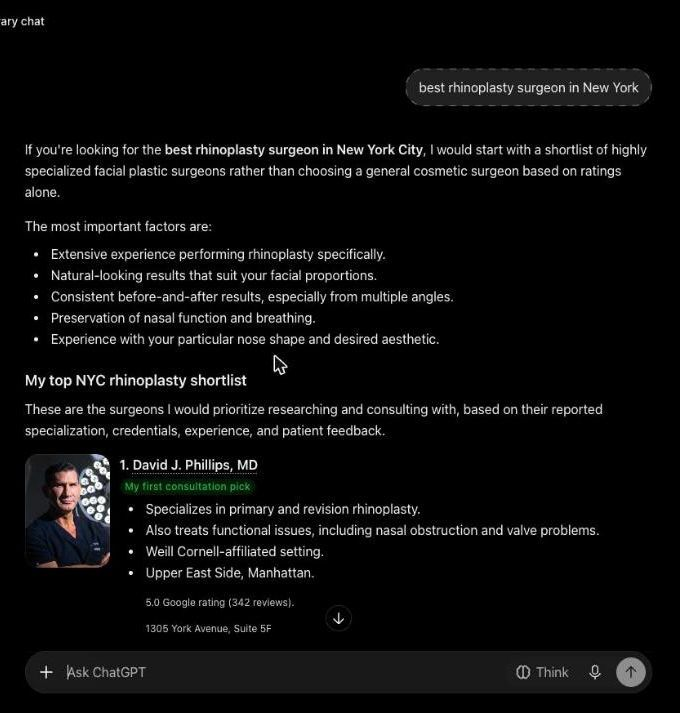
- David J. Phillips, MD
- Maurice M. Khosh, MD
- Richard G. Reish, MD, FACS
- Edward S. Kwak, MD
- Philip J. Miller, MD, FACS
- Mingyang Gray, MD
- Matthew Shawl, MD
- David J. Phillips, MD
- Grigoriy Mashkevich, MD
- Oren Tepper, MD
“best rhinoplasty surgeon in Phoenix”
Same #1 in all three runs: Christian Paquet · 7 different names in 3 runs
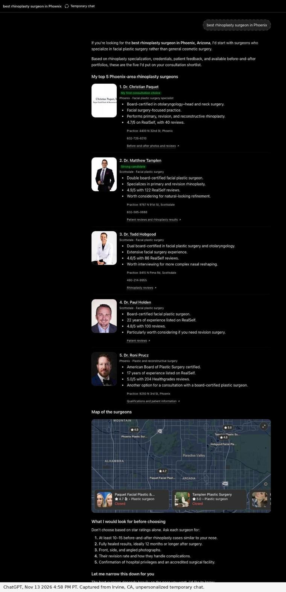
Open full size- Christian Paquet, MD
- Matthew Tamplen, MD
- Todd Hobgood, MD
- Paul Holden, MD
- Roni Prucz, MD
- Christian Paquet, MD
- Matthew Tamplen, MD
- Todd Hobgood, MD
- Daniel Shapiro, MD
- Farhan Taghizadeh, MD
- Christian Paquet, MD
- Matthew Tamplen, MD
- Paul Holden, MD
- Todd Hobgood, MD
- Daniel Shapiro, MD
Who was named, and how often
| Name, as ChatGPT wrote it | Named | Position each time |
|---|---|---|
| Christian Paquet | 3 of 3 | #1, #1, #1 |
| Matthew Tamplen | 3 of 3 | #2, #2, #2 |
| Todd Hobgood | 3 of 3 | #3, #3, #4 |
| Daniel Shapiro | 2 of 3 | #4, #5 |
| Paul Holden | 2 of 3 | #4, #3 |
| Farhan Taghizadeh | 1 of 3 | #5 |
| Roni Prucz | 1 of 3 | #5 |
Earlier the same afternoon: 3 more runs (top of each answer)
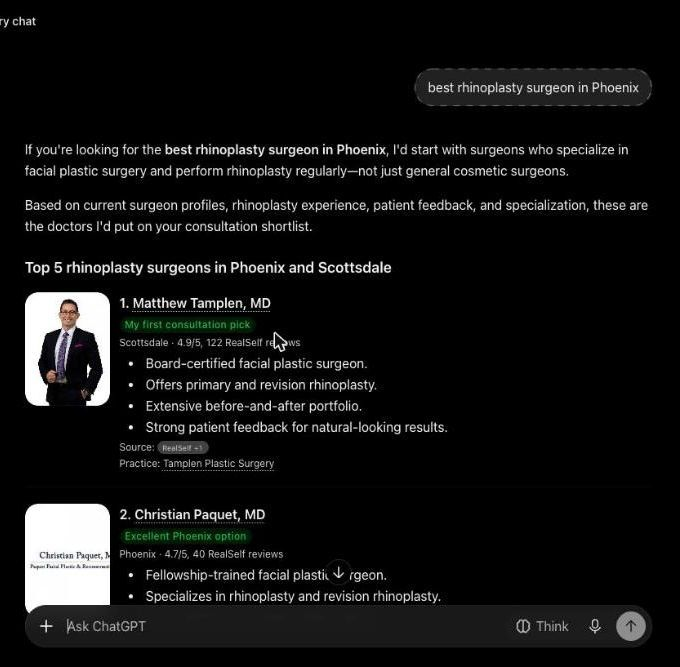
- Matthew Tamplen, MD
- Christian Paquet, MD
- Paul K. Holden, MD
- Todd Hobgood, MD
- Farhan Taghizadeh, MD
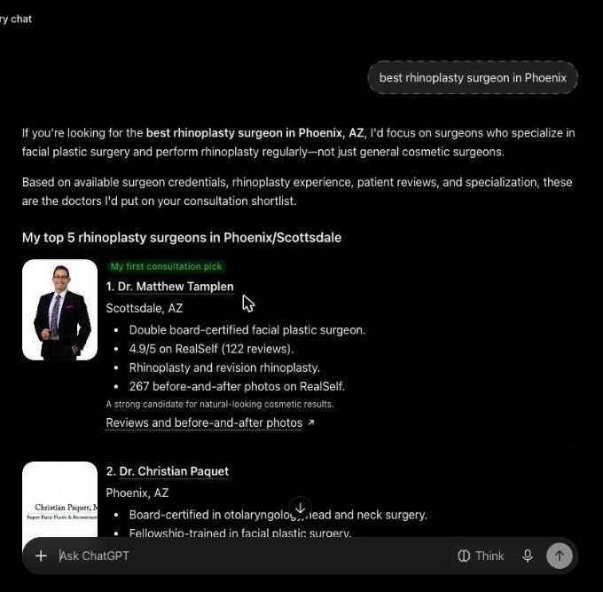
- Matthew Tamplen, MD
- Christian Paquet, MD
- Todd Hobgood, MD
- Daniel Shapiro, MD
- Paul Holden, MD
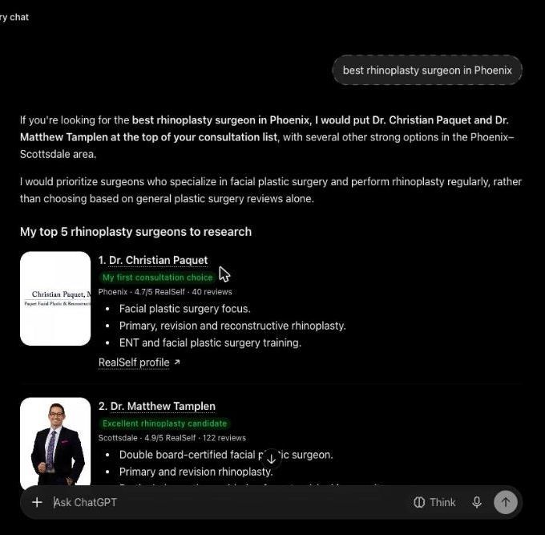
- Christian Paquet, MD
- Matthew Tamplen, MD
- Paul Holden, MD
- Todd Hobgood, MD
- Roni Prucz, MD
“best rhinoplasty surgeon in San Diego”
The #1 changed between runs · 7 different names in 3 runs
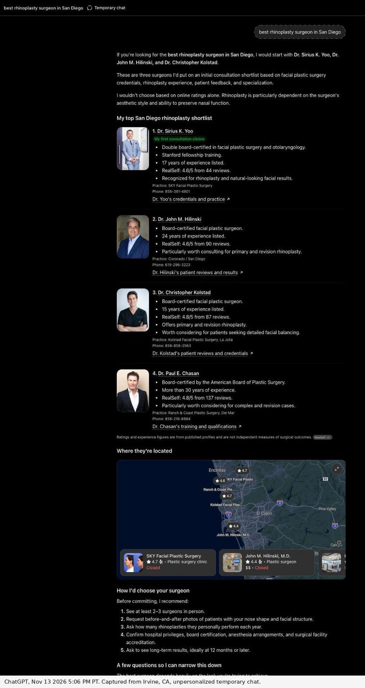
Open full size- Sirius K. Yoo, MD
- John M. Hilinski, MD
- Christopher Kolstad, MD
- Paul E. Chasan, MD
- Sirius K. Yoo, MD
- John M. Hilinski, MD
- Christopher Kolstad, MD
- Ronald J. Edelson, MD
- David B. Hom, MD
- John M. Hilinski, MD
- Sirius K. Yoo, MD
- Christopher Kolstad, MD
- Victor Chung, MD
Who was named, and how often
| Name, as ChatGPT wrote it | Named | Position each time |
|---|---|---|
| Christopher Kolstad | 3 of 3 | #3, #3, #3 |
| John Hilinski | 3 of 3 | #2, #2, #1 |
| Sirius Yoo | 3 of 3 | #1, #1, #2 |
| David Hom | 1 of 3 | #5 |
| Paul Chasan | 1 of 3 | #4 |
| Ronald Edelson | 1 of 3 | #4 |
| Victor Chung | 1 of 3 | #4 |
Earlier the same afternoon: 3 more runs (top of each answer)
- Sirius K. Yoo, MD
- John M. Hilinski, MD
- Christopher Kolstad, MD
- Victor Chung, MD
- Ronald J. Edelson, MD
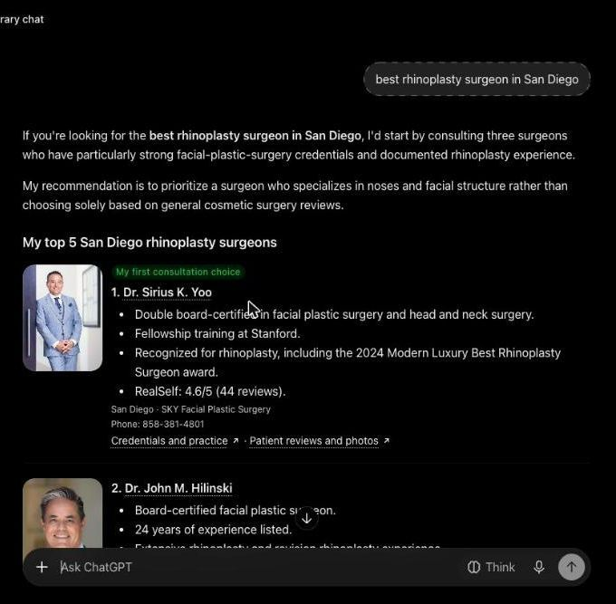
- Sirius K. Yoo, MD
- John M. Hilinski, MD
- Christopher Kolstad, MD
- Richard V. Balikian, MD
- Ronald J. Edelson, MD
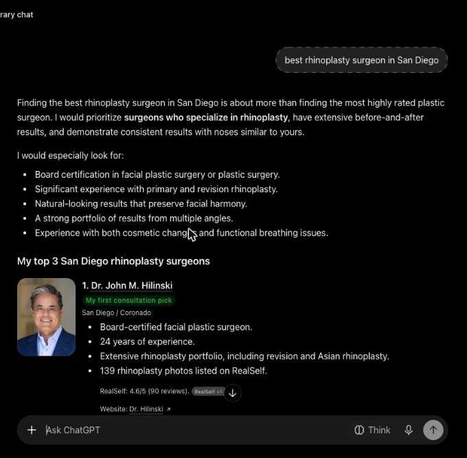
- John M. Hilinski, MD
- Sirius K. Yoo, MD
- Christopher Kolstad, MD
“best rhinoplasty surgeon in Scottsdale”
The #1 changed between runs · 5 different names in 3 runs
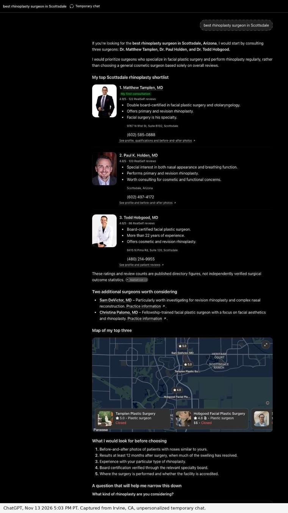
Open full size- Matthew Tamplen, MD
- Paul Holden, MD
- Todd Hobgood, MD
- Matthew Tamplen, MD
- Todd Hobgood, MD
- Paul Holden, MD
- Sam DeVictor, MD
- Christina Palomo, MD
- Todd Hobgood, MD
- Matthew Tamplen, MD
- Paul Holden, MD
Who was named, and how often
| Name, as ChatGPT wrote it | Named | Position each time |
|---|---|---|
| Matthew Tamplen | 3 of 3 | #1, #1, #2 |
| Paul Holden | 3 of 3 | #2, #3, #3 |
| Todd Hobgood | 3 of 3 | #3, #2, #1 |
| Christina Palomo | 1 of 3 | #5 |
| Sam DeVictor | 1 of 3 | #4 |
Earlier the same afternoon: 3 more runs (top of each answer)
- Matthew Tamplen, MD
- Todd Hobgood, MD
- Paul K. Holden, MD
- Sam DeVictor, MD
- Sidney Starkman, MD
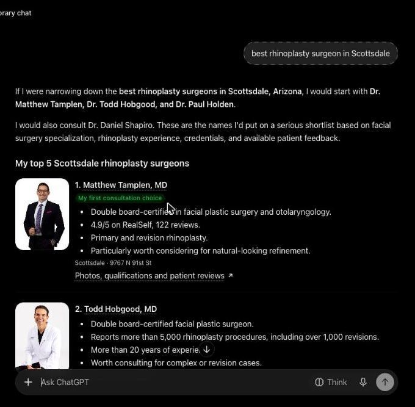
- Matthew Tamplen, MD
- Todd Hobgood, MD
- Paul K. Holden, MD
- Daniel Shapiro, MD
- Sidney Starkman, MD
- Matthew Tamplen, MD
- Paul K. Holden, MD
- Todd Hobgood, MD
- Sam DeVictor, MD
- Daniel Shapiro, MD
Test 03: a narrower question
Ask for a specialty and the answer settles down. Dr. Deepak Dugar, a Local AI Registry client, was named in all three runs and was #1 once. We report him exactly as ChatGPT did.
“best closed rhinoplasty surgeon in Los Angeles”
The #1 changed between runs · 6 different names in 3 runs · Includes a Local AI Registry client
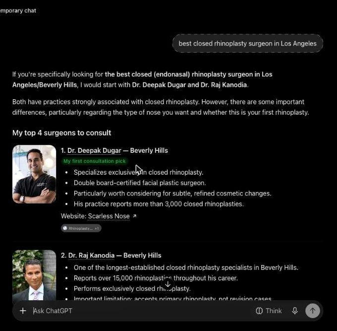
- Deepak Dugar, MD
- Raj Kanodia, MD
- Jacob Sedgh, MD
- Kenneth Hughes, MD
- Raj Kanodia, MD
- Deepak Dugar, MD
- Ari Hyman, MD
- Jacob Sedgh, MD
- Kenneth Hughes, MD
- Raj Kanodia, MD
- Deepak Dugar, MD
- Jacob Sedgh, MD
- Hamilton Facial Plastic Surgery (Jason Hamilton, MD)
Who was named, and how often
| Name, as ChatGPT wrote it | Named | Position each time |
|---|---|---|
| Deepak Dugar | 3 of 3 | 1, 2, 2 |
| Jacob Sedgh | 3 of 3 | 3, 4, 3 |
| Raj Kanodia | 3 of 3 | 2, 1, 1 |
| Kenneth Hughes | 2 of 3 | 4, 5 |
| Ari Hyman | 1 of 3 | 3 |
| Jason Hamilton | 1 of 3 | 4 |
Test 04: a small town
In a smaller market, ChatGPT gave the same top three, in the same order, all three times. Define Clinic, a Local AI Registry client, was #2 every time. This was asked from the US about a UK town.
“best aesthetic clinic in Beaconsfield”
Same #1 every time: S-Thetics Clinic · 5 different names in 3 runs · Includes a Local AI Registry client
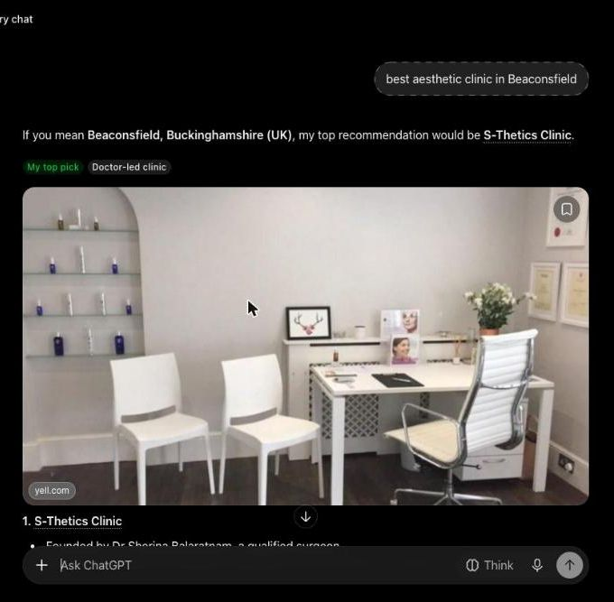
- S-Thetics Clinic
- Define Clinic
- MBA Skin
- Ali Aesthetics MD
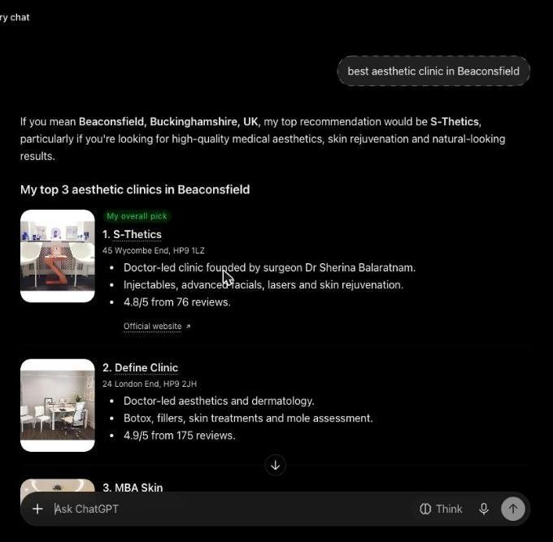
- S-Thetics
- Define Clinic
- MBA Skin
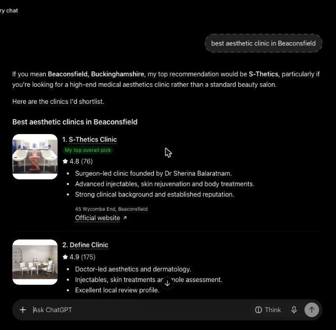
- S-Thetics Clinic
- Define Clinic
- MBA Skin
- The Skin & Self Clinic
Who was named, and how often
| Name, as ChatGPT wrote it | Named | Position each time |
|---|---|---|
| Define Clinic | 3 of 3 | 2, 2, 2 |
| MBA Skin | 3 of 3 | 3, 3, 3 |
| S-Thetics Clinic | 3 of 3 | 1, 1, 1 |
| Ali Aesthetics | 1 of 3 | 4 |
| The Skin & Self Clinic | 1 of 3 | 4 |
Method and disclosure
Each run was a new temporary chat with personalization turned off, typed exactly as shown. Screenshots are cropped only to remove the account sidebar and empty margins. Each shows the top of the answer; the full ordered list from the same moment is printed under it. Tests 02 to 04 were captured Nov 13, 2026, between 3:30 and 5:08 PM PT. In Test 02, Los Angeles' first three asks are the Test 01 runs. Where ChatGPT spelled one surgeon's name two ways, we count it once. Times are Pacific. Dr. Deepak Dugar is a Local AI Registry client; we report him the same way as everyone else.
Download every capture as a spreadsheet (CSV): time, question, names in order, sources and a link to each screenshot. Free to use with credit (CC BY 4.0).
Local AI Registry. “AI Answer Watch: Same Question, Different Answers.” November 13, 2026. https://localairegistry.com/answer-watch/
Reporters and researchers may use these screenshots with credit to Local AI Registry. Want the raw captures or a city of your own? Contact us or call (213) 931-5633.
AI is changing every day. Local AI Registry's dedicated local AI research team keeps testing to find what works best.
Named in AI in 90 days. Guaranteed.
Book a call and we’ll show you, live, what AI says about you today. If we miss the 90 days, we keep working for free until AI names you.